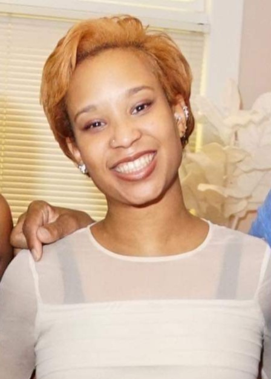

<div class="background page-margin">
    <div class="flex row bio">
        <div>
            
            <!-- <h2> WHO IS SHE<span style="color: red;">?</span></h2> -->
        </div>
        <div class="bio-text">
            <h2> A ramblin' wreck </h2>
            <h2>from Georgia Tech </h2>
            <h2>and a hell of an engineer<span style="color: red;">!</span></h2>
            <div class="margin-top">
                In 2014, I graduated with a Bachelor's of Science in Computational Media Student from the Georgia
                Institute
                of
                Technology. My studies involved computer programming, design, and understanding the computer as a
                medium.
                While
                my more personal interests include film, narrative, and animation, I am open to experience other
                branches of
                my
                field such as UI/UX Design, game development, marketing, cloud, and web development.
            </div>
        </div>
    </div>
</div>